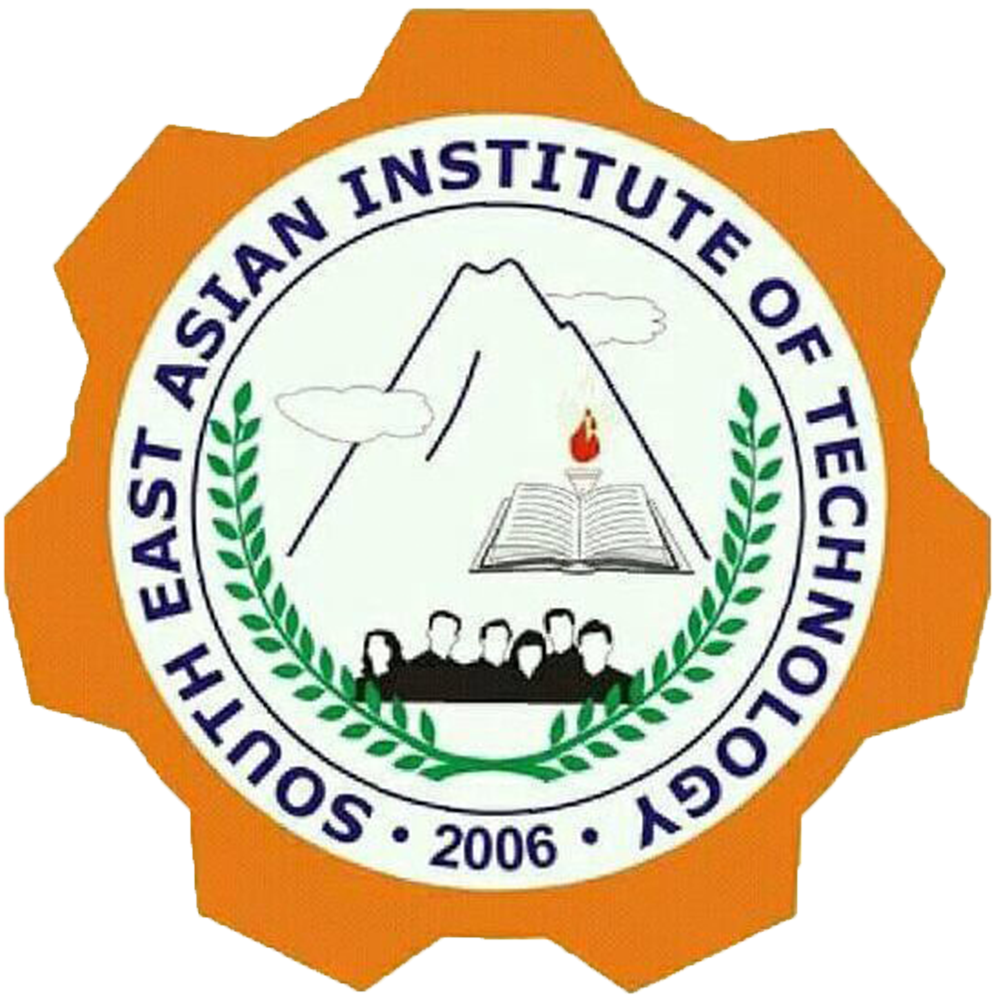

College of Business and Management
- BS Business Administration Major in Mktg Mgt. (BSBA)
- BS Accounting Information System (BSAIS)
- BS Hospitality Management (BSHM)
- BS Tourism Management (BSTM)
- Associate in Hospitality Management (AHM)
COLLEFE OF Education
- Bachelor in Secondary Education Major in English(BSEd - English)
- Bachelor in Secondary Education Major in Math (BSEd - Math)
- Bachelor in Elementary Education (BEEd)
- (New)Bachelor in Early Childhood Education (BECEd)
- (New)Bachelor in Secondary Education Major in Social Studies (BSEd - Social Studies)
College of Engineering and Technology
- BS Information Technology (BSIT)
- BS Civil Engineering (BSCE)
- BS Information Technology specialized in Business Analytics (BSIT-BAST)
- Associate in Computer Technology (ACT)
College of Public Relations
- BS Criminology (BSCrim)
- BS Social Works (BSSW)
- BS Public Administration (BPA)
College of Agriculture
- BS Agriculture (BSAgri)
- Major in Horticulture (Horti)
- Major in Plant Breeding and Genetics (PBG)
- BS Fisheries (BSF)
- BS Agricultural Technology
Basic Education
- BS Agriculture (BSAgri)
- Major in Horticulture (Horti)
- Major in Plant Breeding and Genetics (PBG)
- BS Fisheries (BSF)
- BS Agricultural Technology